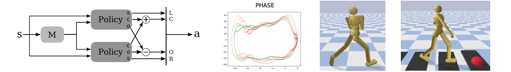

{{ page.title }}
ACM SIGGRAPH Conference on Motion, Interaction, and Games (MIG 2019)
Farzad Abdolhosseini (1) Hung Yu Ling (1) Zhaoming Xie (1) Xue Bin Peng (2) Michiel van de Panne (1)
(1) University of British Columbia (2) University of California, Berkeley

|
Abstract
Human and animal gaits are often symmetric in nature, which points to the use
of motion symmetry as a potentially useful source of structure that can be
exploited for learning. By encouraging symmetric motion, the learning may be
faster, converge to more efficient solutions, and be more aesthetically
pleasing. We describe, compare, and evaluate four practical methods for
encouraging motion symmetry. These are implemented via particular choices of
structure for the policy network, data duplication, or via the loss function.
We experimentally evaluate the methods in terms of learning performance and
achieved symmetry, and provide summary guidelines for the choice of symmetry
method. We further describe some practical and conceptual issues that arise.
Because similar implementation choices exist for other types of inductive
biases, the insights gained may also be relevant to other learning problems
with applicable symmetry abstractions.
|
|
Videos
Bibtex
@inproceedings{2019-MIG-symmetry,
title={On Learning Symmetric Locomotion},
author={Farzad Adbolhosseini and Hung Yu Ling and Zhaoming Xie and Xue Bin Peng and Michiel van de Panne},
booktitle = {Proc. ACM SIGGRAPH Motion, Interaction, and Games (MIG 2019)},
year={2019}
}